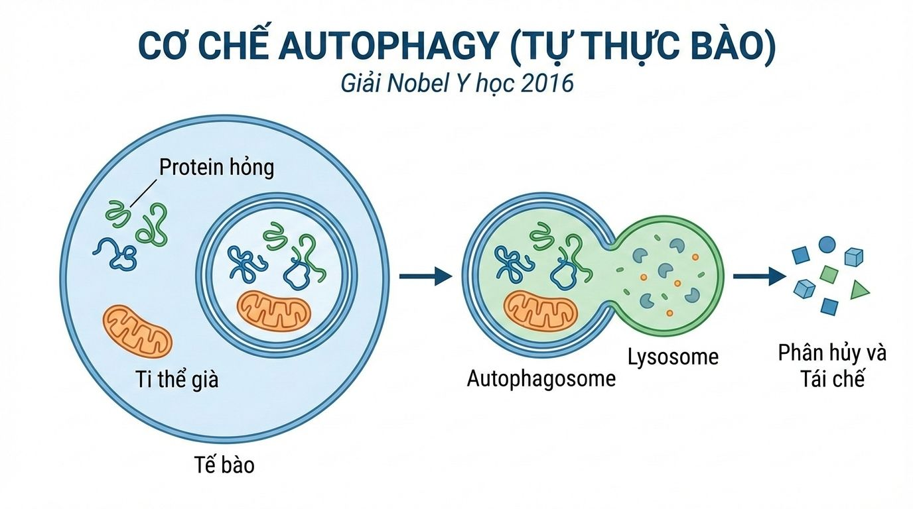

Nobel y học 2016 autophagy (tự thực bào) 🧬
Bỏ ăn sáng giúp trẻ hoá, giảm viêm, giảm nguy cơ ung thư ở cấp độ tế bào

--> Nobel y học 2016 autophagy (tự thực bào) 🧬.
Cơ chế: khi nhịn ăn trên 16 tiếng (bỏ bữa sáng, ăn cách bữa..), cơ thể thiếu nguyên liệu mới. Nó buộc phải "tháo dỡ" những phần cũ kỹ, hư hỏng (protein lỗi, vi khuẩn, tế bào già) để tái chế thành năng lượng. Lợi ích :
• Trẻ hóa: thay thế linh kiện cũ bằng linh kiện mới
• Giảm viêm: quét sạch các gốc tự do thải ra bởi ti thể
• Ngừa ung thư: ngăn chặn sự tích lũy của các đột biến lỗi ở cấp độ tế bào.
Kiểm tra break line
cách ở trên 2 empty line
cách 4 empty line <br><br> cách 1 br <br><br><br><br> cách 2 br <br><br><br><br><br><br> cách 3 br <br><br><br><br>